# /// script
# requires-python = ">=3.10"
# dependencies = [
# "matplotlib",
# "numpy",
# "scikit-image",
# "scipy",
# "tifffile",
# "imagecodecs",
# "pandas",
# "seaborn",
# "bobiac_tools @ git+https://github.com/bobiac/bobiac-tools.git"
# ]
# ///
from pathlib import Path
import matplotlib.pyplot as plt
import numpy as np
import pandas as pd
import seaborn as sns
import skimage
import tifffile
from bobiac_tools import overlay_labels
# define file paths
image_path = Path(
"../../_static/images/quant/02_nested_measurements/images/F01_837.tif"
)
mask_cell_path = Path(
"../../_static/images/quant/02_nested_measurements/masks/F01_837w1.TIF"
)
mask_nucleus_path = Path(
"../../_static/images/quant/02_nested_measurements/masks/F01_837w2.TIF"
)
segmentation_spots_path = Path(
"../../_static/images/quant/02_nested_measurements/spot_lists/F01_837_spots.csv"
)
# load images and masks
image = tifffile.imread(image_path)
image_nuclear = image[0]
image_spots = image[2]
mask_cell = tifffile.imread(mask_cell_path)
mask_nucleus = tifffile.imread(mask_nucleus_path)
# remove boundary objects
mask_cell = skimage.segmentation.clear_border(mask_cell)
mask_nucleus = skimage.segmentation.clear_border(mask_nucleus)
# load segmented spots
df_spots = pd.read_csv(segmentation_spots_path)
overlay_labels(image=[image_nuclear, image_spots])
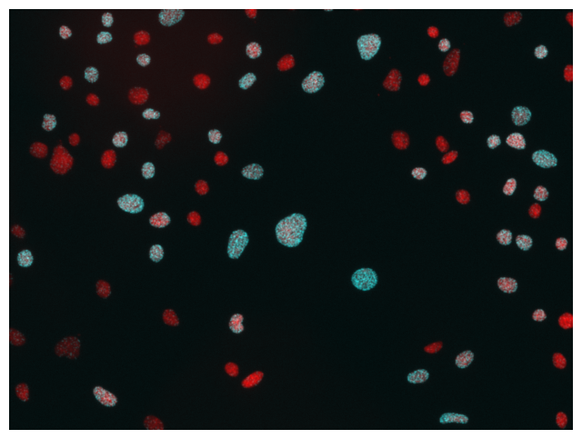
(<Figure size 800x800 with 1 Axes>, <Axes: >)
print(df_spots[["y", "x"]])
y x
0 92 136
1 37 125
2 86 140
3 43 121
4 52 154
... ... ...
1173 1036 1161
1174 1026 1187
1175 1019 1197
1176 1010 509
1177 1010 472
[1178 rows x 2 columns]
overlay_labels(
label_mask=[mask_cell, mask_nucleus], coordinates=df_spots[["y", "x"]].to_numpy()
)
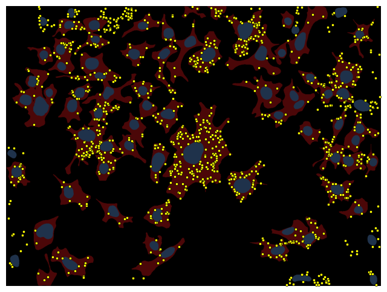
(<Figure size 800x800 with 1 Axes>, <Axes: >)
overlay_labels(label_mask=mask_cell)
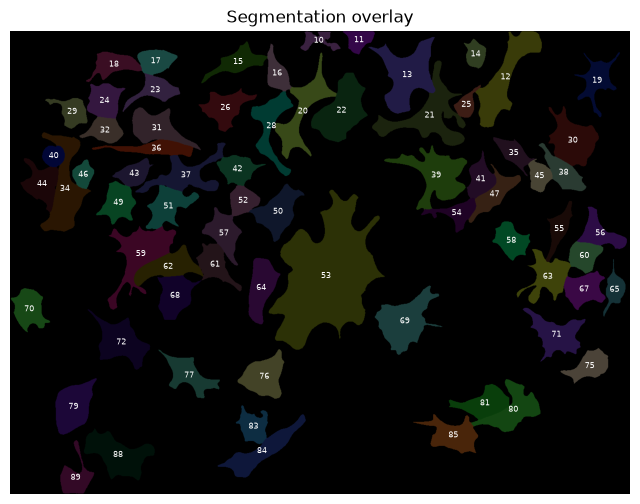
(<Figure size 800x800 with 1 Axes>,
<Axes: title={'center': 'Segmentation overlay'}>)
overlay_labels(label_mask=mask_nucleus)
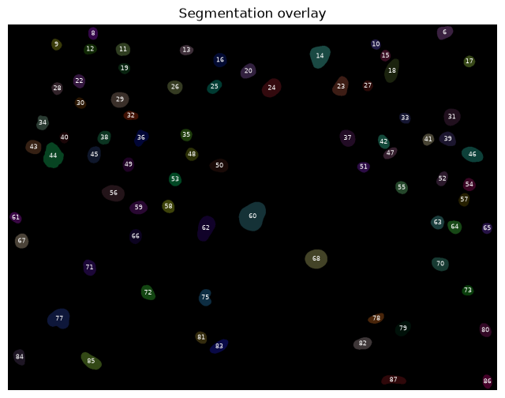
(<Figure size 800x800 with 1 Axes>,
<Axes: title={'center': 'Segmentation overlay'}>)
properties = ["area", "label"]
props = skimage.measure.regionprops_table(mask_cell, properties=properties)
df_cell = pd.DataFrame(props)
print(df_cell)
area label
0 1835.0 10
1 2252.0 11
2 11083.0 12
3 11811.0 13
4 2201.0 14
.. ... ...
65 3711.0 83
66 6932.0 84
67 6111.0 85
68 9146.0 88
69 3786.0 89
[70 rows x 2 columns]
properties = ["area", "intensity_mean", "label"]
props = skimage.measure.regionprops_table(
mask_nucleus, intensity_image=image_nuclear, properties=properties
)
df_nuc = pd.DataFrame(props)
print(df_nuc)
area intensity_mean label
0 1377.0 1190.348584 6
1 796.0 1762.503769 8
2 744.0 2053.278226 9
3 643.0 2353.867807 10
4 1222.0 1984.824877 11
.. ... ... ...
72 1372.0 2598.682945 83
73 1219.0 1351.519278 84
74 1872.0 1978.978098 85
75 868.0 2060.660138 86
76 1472.0 1160.914402 87
[77 rows x 3 columns]
df_nuc["image_id"] = image_path.stem
print(df_nuc)
area intensity_mean label image_id
0 1377.0 1190.348584 6 F01_837
1 796.0 1762.503769 8 F01_837
2 744.0 2053.278226 9 F01_837
3 643.0 2353.867807 10 F01_837
4 1222.0 1984.824877 11 F01_837
.. ... ... ... ...
72 1372.0 2598.682945 83 F01_837
73 1219.0 1351.519278 84 F01_837
74 1872.0 1978.978098 85 F01_837
75 868.0 2060.660138 86 F01_837
76 1472.0 1160.914402 87 F01_837
[77 rows x 4 columns]
sns.histplot(
data=df_nuc,
x="intensity_mean",
bins=50,
)
<Axes: xlabel='intensity_mean', ylabel='Count'>
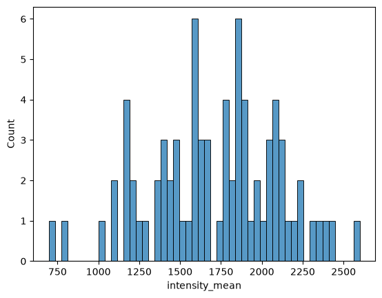
df_nuc["expression"] = pd.cut(
df_nuc["intensity_mean"], bins=[0, 1700, np.inf], labels=["off", "on"]
)
print(df_nuc["expression"].unique())
['off', 'on']
Categories (2, str): ['off' < 'on']
overlay_labels(
image=image_nuclear,
label_mask=mask_nucleus,
df=df_nuc,
id_col="label",
measurement_col="expression",
)
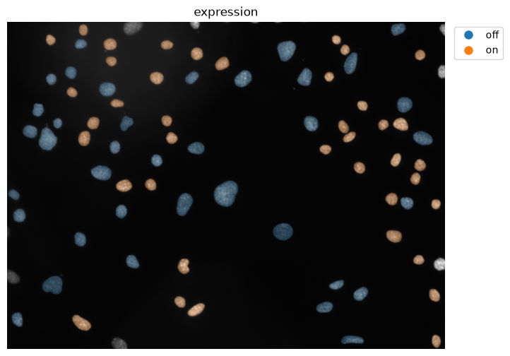
(<Figure size 800x800 with 1 Axes>, <Axes: title={'center': 'expression'}>)
print(df_nuc)
area intensity_mean label image_id expression
0 1377.0 1190.348584 6 F01_837 off
1 796.0 1762.503769 8 F01_837 on
2 744.0 2053.278226 9 F01_837 on
3 643.0 2353.867807 10 F01_837 on
4 1222.0 1984.824877 11 F01_837 on
.. ... ... ... ... ...
72 1372.0 2598.682945 83 F01_837 on
73 1219.0 1351.519278 84 F01_837 off
74 1872.0 1978.978098 85 F01_837 on
75 868.0 2060.660138 86 F01_837 on
76 1472.0 1160.914402 87 F01_837 off
[77 rows x 5 columns]
overlay_labels(label_mask=mask_cell)
(<Figure size 800x800 with 1 Axes>,
<Axes: title={'center': 'Segmentation overlay'}>)
overlay_labels(label_mask=mask_nucleus)
(<Figure size 800x800 with 1 Axes>,
<Axes: title={'center': 'Segmentation overlay'}>)
properties = ["intensity_mean", "label"]
labels = skimage.measure.regionprops_table(
mask_nucleus, intensity_image=mask_cell, properties=properties
)
df_merge = pd.DataFrame(labels)
df_merge = df_merge.rename({"intensity_mean": "label_cell"}, axis=1)
print(df_merge)
label_cell label
0 0.0 6
1 0.0 8
2 0.0 9
3 14.0 10
4 17.0 11
.. ... ...
72 84.0 83
73 0.0 84
74 88.0 85
75 0.0 86
76 0.0 87
[77 rows x 2 columns]
df_nuc = df_nuc.merge(df_merge, on="label", how="left")
print(df_nuc)
area intensity_mean label image_id expression label_cell
0 1377.0 1190.348584 6 F01_837 off 0.0
1 796.0 1762.503769 8 F01_837 on 0.0
2 744.0 2053.278226 9 F01_837 on 0.0
3 643.0 2353.867807 10 F01_837 on 14.0
4 1222.0 1984.824877 11 F01_837 on 17.0
.. ... ... ... ... ... ...
72 1372.0 2598.682945 83 F01_837 on 84.0
73 1219.0 1351.519278 84 F01_837 off 0.0
74 1872.0 1978.978098 85 F01_837 on 88.0
75 868.0 2060.660138 86 F01_837 on 0.0
76 1472.0 1160.914402 87 F01_837 off 0.0
[77 rows x 6 columns]
mapping = df_nuc.loc[df_nuc["label_cell"] != 0].drop_duplicates(
"label_cell", keep=False
)[["label_cell", "expression"]]
mapping
| label_cell | expression | |
|---|---|---|
| 3 | 14.0 | on |
| 4 | 17.0 | on |
| 5 | 18.0 | off |
| 6 | 15.0 | on |
| 7 | 13.0 | off |
| ... | ... | ... |
| 68 | 80.0 | off |
| 70 | 83.0 | on |
| 71 | 85.0 | off |
| 72 | 84.0 | on |
| 74 | 88.0 | on |
67 rows × 2 columns
df_cell = df_cell.merge(
mapping, left_on="label", right_on="label_cell", how="inner"
).drop(columns="label_cell")
print(df_cell)
area label expression
0 11083.0 12 off
1 11811.0 13 off
2 2201.0 14 on
3 4385.0 15 on
4 3136.0 16 on
.. ... ... ...
62 5343.0 81 off
63 3711.0 83 on
64 6932.0 84 on
65 6111.0 85 off
66 9146.0 88 on
[67 rows x 3 columns]
overlay_labels(
image=image_nuclear,
label_mask=mask_cell,
df=df_cell,
id_col="label",
measurement_col="expression",
)
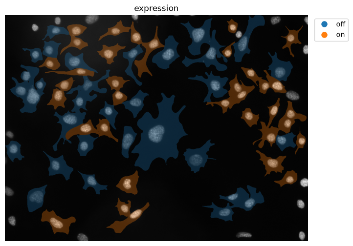
(<Figure size 800x800 with 1 Axes>, <Axes: title={'center': 'expression'}>)
overlay_labels(label_mask=mask_cell, coordinates=df_spots[["y", "x"]].to_numpy())
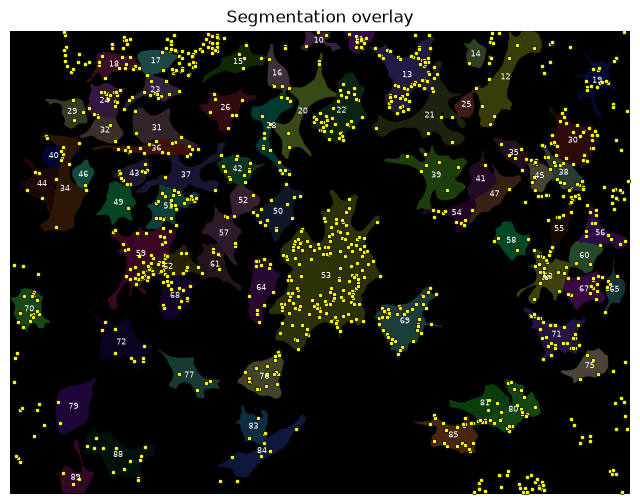
(<Figure size 800x800 with 1 Axes>,
<Axes: title={'center': 'Segmentation overlay'}>)
df_spots["label_cell"] = mask_cell[df_spots["y"].astype(int), df_spots["x"].astype(int)]
print(df_spots["label_cell"].unique())
[ 0 10 11 12 13 14 15 16 17 18 19 20 21 22 23 24 25 26 28 29 30 31 32 34
35 36 37 38 39 40 41 42 43 44 45 46 47 49 50 51 52 53 54 55 56 57 58 59
60 61 62 63 64 65 67 68 69 70 71 72 75 76 77 79 80 81 83 84 85 88 89]
sns.histplot(data=df_spots, x="label_cell", bins=len(df_spots["label_cell"].unique()))
<Axes: xlabel='label_cell', ylabel='Count'>
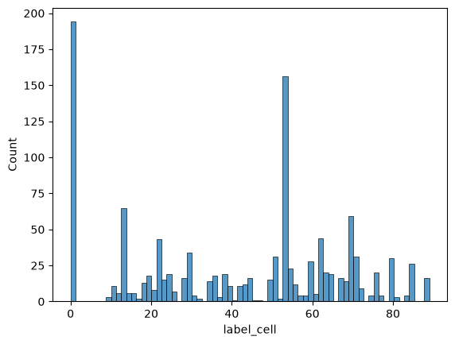
df_spots = df_spots.loc[df_spots["label_cell"] != 0]
print(df_spots)
channel y x label_cell
98 1 2 691 10
99 1 33 664 10
100 1 10 710 10
101 1 19 791 11
102 1 16 799 11
... ... ... ... ...
1143 1 1003 288 88
1144 1 1008 288 88
1145 1 1006 154 89
1146 1 1017 140 89
1147 1 992 119 89
[984 rows x 4 columns]
mapping = df_spots["label_cell"].value_counts().reset_index()
print(mapping)
label_cell count
0 53 156
1 13 65
2 62 44
3 69 44
4 22 43
.. ... ...
65 25 1
66 41 1
67 46 1
68 47 1
69 49 1
[70 rows x 2 columns]
df_cell = df_cell.merge(
mapping, left_on="label", right_on="label_cell", how="inner"
).drop(columns="label_cell")
print(df_cell)
area label expression count
0 11083.0 12 off 6
1 11811.0 13 off 65
2 2201.0 14 on 1
3 4385.0 15 on 5
4 3136.0 16 on 6
.. ... ... ... ...
62 5343.0 81 off 3
63 3711.0 83 on 4
64 6932.0 84 on 5
65 6111.0 85 off 21
66 9146.0 88 on 13
[67 rows x 4 columns]
sns.histplot(
data=df_cell,
x="count",
bins=20,
hue="expression",
)
<Axes: xlabel='count', ylabel='Count'>
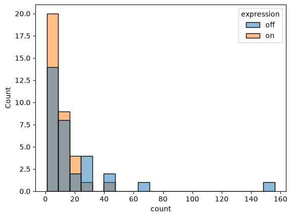
overlay_labels(
image=image_nuclear,
label_mask=mask_cell,
df=df_cell,
id_col="label",
measurement_col="count",
)
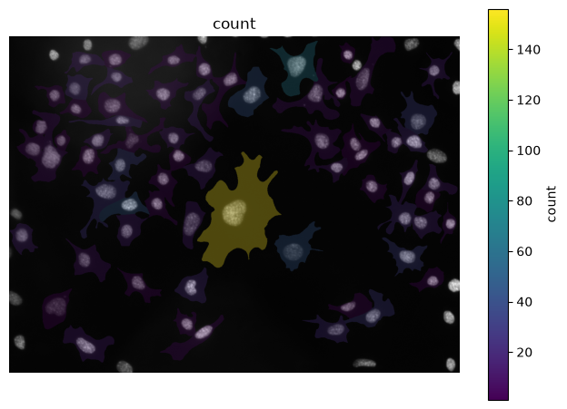
(<Figure size 800x800 with 2 Axes>, <Axes: title={'center': 'count'}>)
df_cell["spot_count_norm"] = df_cell["count"] / df_cell["area"]
print(df_cell["spot_count_norm"])
0 0.000541
1 0.005503
2 0.000454
3 0.001140
4 0.001913
...
62 0.000561
63 0.001078
64 0.000721
65 0.003436
66 0.001421
Name: spot_count_norm, Length: 67, dtype: float64
overlay_labels(
image=image_nuclear,
label_mask=mask_cell,
df=df_cell,
id_col="label",
measurement_col="spot_count_norm",
)
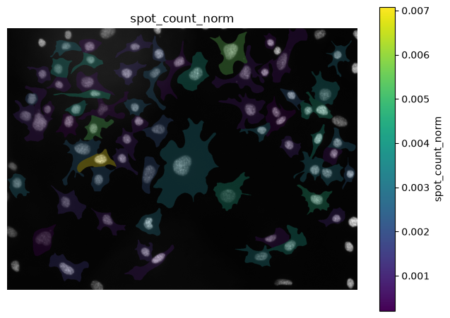
(<Figure size 800x800 with 2 Axes>,
<Axes: title={'center': 'spot_count_norm'}>)
sns.histplot(data=df_cell, x="spot_count_norm", bins=20, hue="expression")
<Axes: xlabel='spot_count_norm', ylabel='Count'>
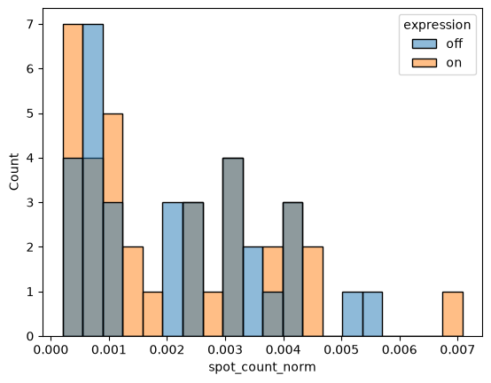
image_folder = Path("../../_static/images/quant/02_nested_measurements/images/")
mask_folder = Path("../../_static/images/quant/02_nested_measurements/masks/")
spot_folder = Path("../../_static/images/quant/02_nested_measurements/spot_lists/")
image_paths = sorted(image_folder.glob("*.tif"))
list_df = []
for image_path in image_paths:
image_id = image_path.stem # e.g. F01_837
# load multi-channel image and extract nuclear channel
image = tifffile.imread(image_path)
image_nuclear = image[0]
# load masks and spot coordinates
mask_cell = tifffile.imread(mask_folder / f"{image_id}w1.TIF")
mask_nucleus = tifffile.imread(mask_folder / f"{image_id}w2.TIF")
df_spots = pd.read_csv(spot_folder / f"{image_id}_spots.csv")
# remove objects touching the border
mask_cell = skimage.segmentation.clear_border(mask_cell)
mask_nucleus = skimage.segmentation.clear_border(mask_nucleus)
# --- cell dataframe ---
df_cell = pd.DataFrame(
skimage.measure.regionprops_table(mask_cell, properties=["area", "label"])
)
# --- nucleus dataframe: measure and classify expression ---
df_nuc = pd.DataFrame(
skimage.measure.regionprops_table(
mask_nucleus,
intensity_image=image_nuclear,
properties=["area", "intensity_mean", "label"],
)
)
df_nuc["image_id"] = image_id
df_nuc["expression"] = pd.cut(
df_nuc["intensity_mean"], bins=[0, 1700, np.inf], labels=["off", "on"]
)
# --- map each nucleus to the cell it sits in ---
df_merge = pd.DataFrame(
skimage.measure.regionprops_table(
mask_nucleus,
intensity_image=mask_cell,
properties=["intensity_mean", "label"],
)
).rename(columns={"intensity_mean": "label_cell"})
df_nuc = df_nuc.merge(df_merge, on="label", how="left")
mapping_expr = df_nuc[df_nuc["label_cell"] != 0].drop_duplicates(
"label_cell", keep=False
)[["label_cell", "expression"]]
df_cell = df_cell.merge(
mapping_expr, left_on="label", right_on="label_cell", how="inner"
).drop(columns="label_cell")
# --- count spots per cell ---
df_spots["label_cell"] = mask_cell[
df_spots["y"].astype(int), df_spots["x"].astype(int)
]
df_spots = df_spots.loc[df_spots["label_cell"] != 0]
mapping_spots = df_spots["label_cell"].value_counts().reset_index()
df_cell = df_cell.merge(
mapping_spots, left_on="label", right_on="label_cell", how="inner"
).drop(columns="label_cell")
df_cell["spot_count_norm"] = df_cell["count"] / df_cell["area"]
df_cell["image_id"] = image_id
list_df.append(df_cell)
df_full = pd.concat(list_df, ignore_index=True)
print(df_full)
area label expression count spot_count_norm image_id
0 11083.0 12 off 6 0.000541 F01_837
1 11811.0 13 off 65 0.005503 F01_837
2 2201.0 14 on 1 0.000454 F01_837
3 4385.0 15 on 5 0.001140 F01_837
4 3136.0 16 on 6 0.001913 F01_837
.. ... ... ... ... ... ...
62 5343.0 81 off 3 0.000561 F01_837
63 3711.0 83 on 4 0.001078 F01_837
64 6932.0 84 on 5 0.000721 F01_837
65 6111.0 85 off 21 0.003436 F01_837
66 9146.0 88 on 13 0.001421 F01_837
[67 rows x 6 columns]
df_plot = (
df_full.groupby(["expression", "image_id"])[["count", "spot_count_norm"]]
.mean()
.reset_index()
)
df_plot
| expression | image_id | count | spot_count_norm | |
|---|---|---|---|---|
| 0 | off | F01_837 | 19.812500 | 0.002175 |
| 1 | on | F01_837 | 9.514286 | 0.002099 |
sns.boxplot(
data=df_plot,
x="expression",
y="count",
)
sns.swarmplot(data=df_plot, x="expression", y="count", c="k", s=10)
plt.ylim(0)
(0.0, 20.327410714285715)
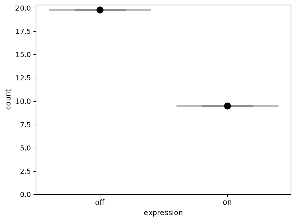
sns.boxplot(
data=df_plot,
x="expression",
y="spot_count_norm",
)
sns.swarmplot(data=df_plot, x="expression", y="spot_count_norm", c="k", s=10)
plt.ylim(0)
(0.0, 0.0021783840977964435)
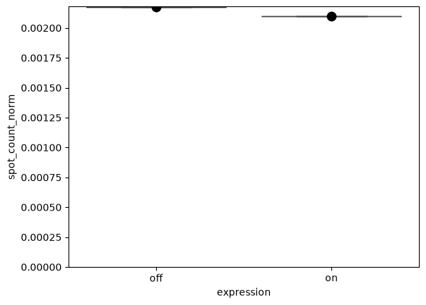